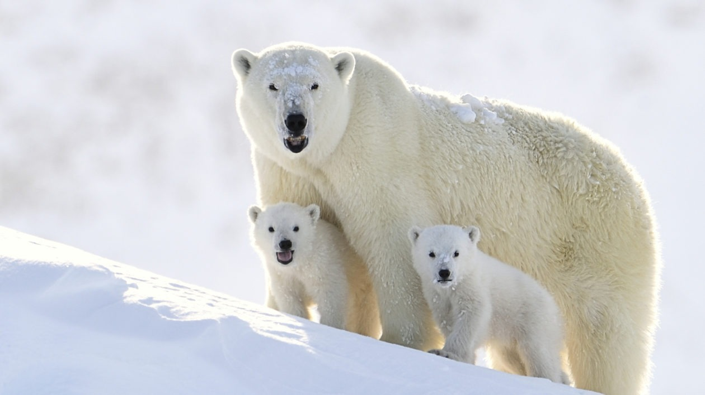

北極熊 Polar Bear
北極熊
小北極熊

北極熊
Previous
Next
北極熊的個性：
北極熊的性格通常被描述為獨立、自信而寡言
的。牠們經常獨自在廣闊的極地環境中漫步，
展現出獨立自主的特質。北極熊也是非常聰明
和善於適應的動物，能夠快速學習和適應新的
情境和挑戰。然而，牠們也可以表現出具有攻
擊性的行為，特別是當感到威脅或受到干擾時
。儘管如此，北極熊通常更傾向於避免與人類
接觸，並會儘量保持距離。總體而言，北極熊
的性格特點體現了其適應極地環境和狩獵生活
方式的需要，並且保持著一定的警覺性和自主
性。
北極熊吃什麼？
北極熊主要以肉類為食，牠們是優秀的捕獵者
，主要獵食海豹和魚類。牠們在冰層上等待獵
物出現，然後以迅雷不及掩耳之勢進行突襲。
此外，北極熊也會吃一些植物性食物，如海藻
、苔蘚和浮游生物。牠們需要高脂肪的食物來
維持體溫和能量，並在缺食的時候利用體內脂
肪儲備。北極熊是極地食物鏈的頂級掠食者，
其食物來源的可用性對其生存至關重要。然而
，由於氣候變化和生境破壞的影響，北極熊面
臨著食物短缺的威脅，這對牠們的生存造成了
挑戰。
北極熊的外觀＆特徵：
北極熊是一種特別適應極地生活的大型哺乳動
物。牠們具有厚重的白色毛皮，這使得牠們在
雪地中具有極佳的保暖性能，同時也提供了有
效的保護。北極熊的身體結構龐大且肌肉發達
，有著特徵性的長頸和粗壯的前肢，這些特徵
讓牠們能夠在冰雪覆蓋的環境中行走、游泳和
捕獵。此外，牠們有一對小而圓的耳朵，以及
尖銳的爪子和大而圓的黑色鼻子。總的來說，
北極熊的外表特徵使其能夠在極端寒冷的環境
中生存並適應極地的生活方式。
北極熊分佈：
北極熊是一種特殊的物種，主要分布在北極圈
的海洋和附近的陸地上。牠們的分布範圍主要
包括加拿大、阿拉斯加、挪威、俄羅斯和格陵
蘭等地區。由於牠們依賴冰層和海洋環境中的
獵物，所以北極熊通常出沒在冰冷的極地地區
。然而，隨著氣候變暖和冰層減少，牠們的棲
息地受到了威脅。目前，北極熊的數量估計約
為2.5萬到3.5萬頭，但這一數字可能會因為
缺乏全面的監測和數據而有所不確定。由於氣
候變化和人類活動的影響，北極熊面臨著嚴峻
的生存挑戰，保護牠們的生活環境和保持數量
的穩定至關重要。
北極熊的生活型態：
北極熊是一種極地物種，具有獨特的生活型態
和習性。牠們是頂級掠食者，以海洋環境中的
海豹、魚類和其他海洋生物為食。北極熊通常
在冰層上覓食、休息和繁殖，並以游泳的方式
在海洋中移動。牠們擁有厚厚的脂肪和毛皮，
可以保護自己免受極寒的氣候影響。北極熊是
出色的游泳者和潛水者，可以在海洋中長時間
游泳和尋找獵物。牠們通常獨自生活，但在繁
殖季節時會形成一些短暫的社交組。由於氣候
變暖和冰層減少，北極熊的生活受到了嚴重威
脅，牠們面臨著食物短缺、棲息地喪失和其他
生存挑戰。因此，保護北極熊和其棲息地對於
維護這一獨特物種的生存至關重要。
北極熊的壽命：
北極熊的壽命通常在25到30年之間。